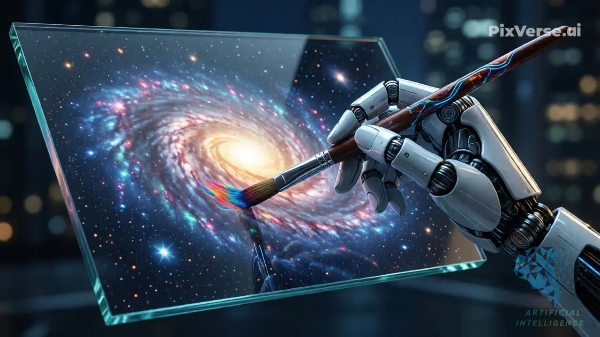
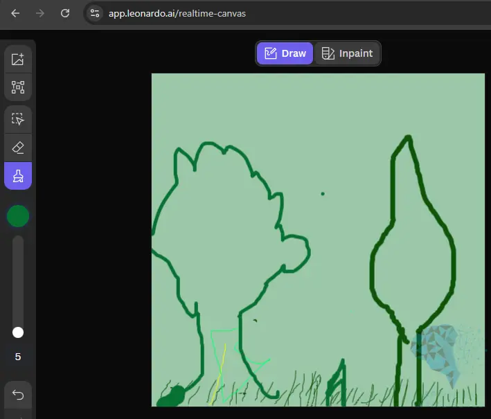
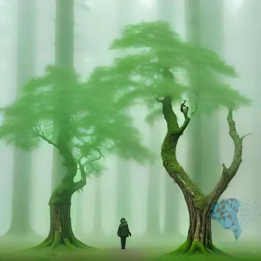
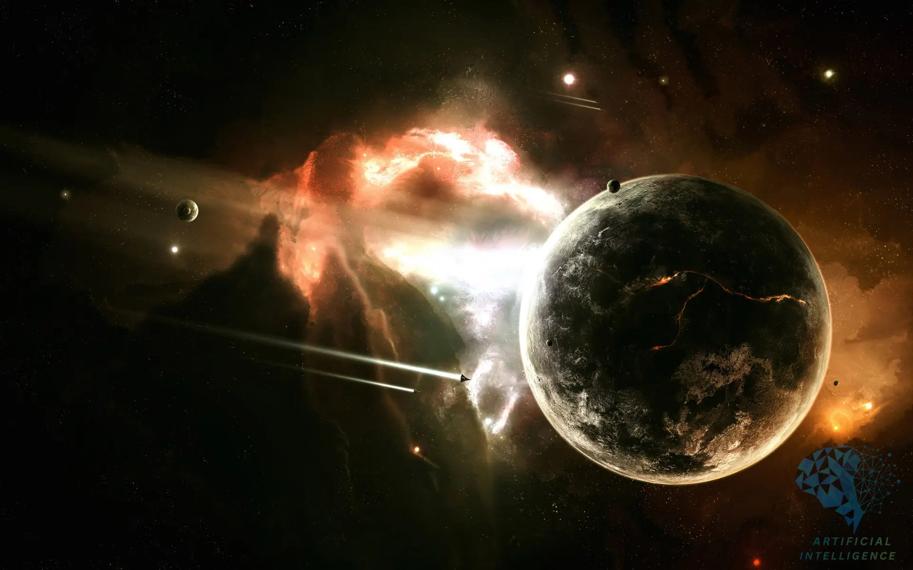
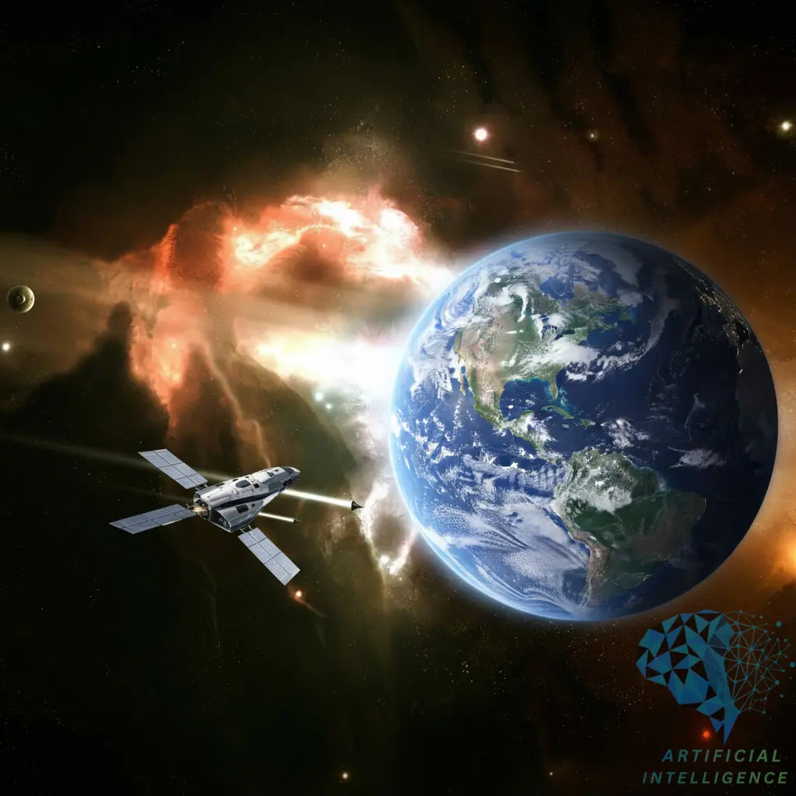

تقنيات توليد ومعالجة الصور بالذكاء الاصطناعي التوليدي
1. تحويل النص إلى صورة (Text-to-Image)
تتيح هذه التقنية للمستخدمين توليد صور واقعية أو فنية من خلال تقديم وصف نصي بسيط. يقوم النموذج بتحويل الكلمات إلى مفاهيم بصرية، ثم يقوم بإنشاء صورة تتوافق مع هذا الوصف.
آلية العمل:
تعتمد نماذج Text-to-Image على بنية معقدة تتضمن عادةً مكونين رئيسيين: مشفر نصي (Text Encoder) ومولد صور (Image Generator). يقوم المشفر النصي بتحويل الوصف النصي إلى تمثيل رقمي (vector) يفهمه النموذج. بعد ذلك، يستخدم مولد الصور هذا التمثيل لإنشاء الصورة خطوة بخطوة، غالبًا باستخدام تقنيات الانتشار (Diffusion Models) التي تبدأ بضوضاء عشوائية وتزيلها تدريجيًا لتشكيل الصورة النهائية.
الأدوات والنماذج الشائعة:
- DALL-E (OpenAI): من أوائل النماذج التي أظهرت قدرات مذهلة في توليد الصور من النصوص.
- Stable Diffusion: نموذج مفتوح المصدر وشائع يتيح توليد صور عالية الجودة بكفاءة.
- Midjourney: أداة قوية تركز على الجانب الفني والإبداعي في توليد الصور.

"A futuristic robot hand holding a digital paintbrush, creating a colorful galaxy on a floating glass canvas, cinematic lighting, hyper-realistic "
الترجمة : يد روبوتية مستقبلية تحمل فرشاة رسم رقمية، ترسم مجرة ملونة على لوحة زجاجية عائمة، بإضاءة سينمائية، وواقعية فائقة
2. نماذج مطورة من رسوم أولية (Sketch-to-Image) أو تعديل صورة من خلال نص (Image-to-Image)
تسمح هذه التقنيات للمستخدمين بتعديل أو تحسين الصور الموجودة باستخدام رسومات بسيطة (Sketches) أو أوامر نصية.
آلية العمل:
في Sketch-to-Image، يتم تزويد النموذج برسم تخطيطي بسيط (أو صورة أولية) ووصف نصي. يقوم النموذج بتحويل هذا الرسم إلى صورة واقعية أو فنية مع الحفاظ على الهيكل الأساسي للرسم. أما Image-to-Image، فيقوم بتعديل صورة موجودة بناءً على وصف نصي أو صورة مرجعية أخرى، مما يتيح تغيير الأسلوب، إضافة عناصر، أو تحويل الصورة بالكامل. تعتمد هذه التقنيات غالبًا على نماذج الانتشار الشرطية (Conditional Diffusion Models) التي توجه عملية التوليد بناءً على المدخلات البصرية والنصية.
الأدوات والنماذج الشائعة:
- ControlNet: إضافة قوية لنماذج الانتشار تسمح بالتحكم الدقيق في توليد الصور من خلال مدخلات مثل الرسوم التخطيطية، خرائط العمق، أو وضعيات الجسم.
- Img2img (في Stable Diffusion): وظيفة تسمح بتعديل الصور الموجودة باستخدام أوامر نصية.

الرسم الأولي (Sketch)

النتيجة النهائية


Increase the resolution. Replace the existing planet with Earth and place a spacecraft
الترجمة :قم بزيادة الدقة. استبدل الكوكب الحالي بالأرض وضع مركبة فضائية.